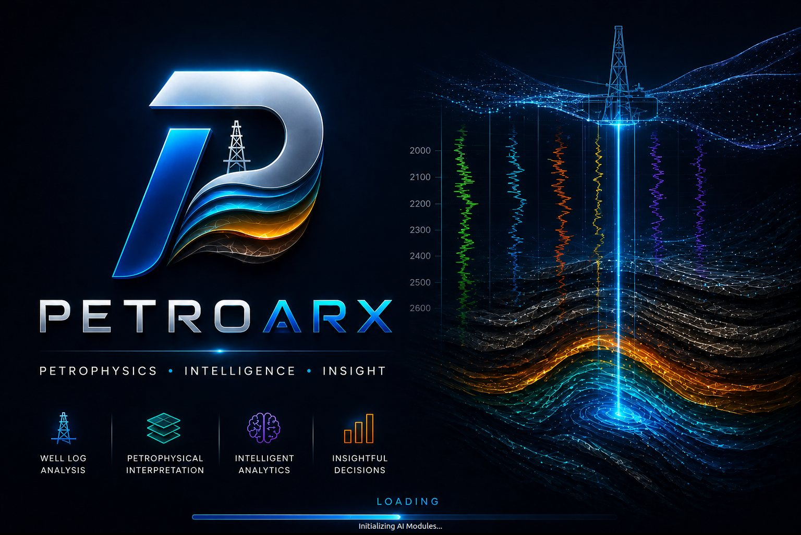

Well data management
Import and manage LAS 2.0/3.0 and CSV datasets with full curve metadata and unit validation, organised into projects by field, basin and operator.
Petrophysics · Intelligence · Insight
A desktop platform for well-log interpretation, built in Python and PyQt5. It takes a LAS file from raw curves through quality control, formation evaluation and machine-learning analytics to a defensible net-pay answer — in one workspace.

Walkthrough
A recorded session through the platform — loading a LAS file, running quality control, computing shale volume, porosity and saturation, then reading the net-pay result.
The screen recording is still being produced. Every screen it will cover is already captured in the interface gallery below.
Browse the interface instead
Drop the recording at assets/video/petroarx-demo.mp4 and this player picks it up
automatically — no other change needed.
Capabilities
Ten core modules, reachable from a single project workspace. Curves loaded once are available to every calculation downstream.
Import and manage LAS 2.0/3.0 and CSV datasets with full curve metadata and unit validation, organised into projects by field, basin and operator.
Automated QC for missing values, outliers and spikes using IQR, Z-score and Isolation Forest, with before/after comparison and a depth-indexed issues register.
Configurable depth-track plots, triple-combo presets, crossplots, histograms, pair plots and violin plots, all synchronised to the active depth range.
Trajectories rendered as colour tubes with log ribbons, formation tops and perforations, under full camera, lighting and cross-section control.
Integrated shale volume, porosity, water saturation, permeability and net-pay workflows, each with its own parameter panel and result summary.
Facies classification, missing-log prediction and ML-driven quality control, trained inside the application with cross-validation and uncertainty reporting.
Pore-pressure prediction, geomechanics analysis and image-log processing, plus multi-mineral ELAN inversion with a least-squares solver.
A curated, searchable index of 150+ public seismic, well-log, geological, satellite and research datasets, filterable by category, access type and region.
The active well is exposed as a DataFrame so any workflow the interface does not cover can be scripted in place and run against live data.
Export cleaned curves, computed logs, QC registers and figures as PDF, PNG, SVG or CSV, with an export-report action on every analysis tab.
Workflow
The tab order mirrors the interpretation sequence, so the workspace itself carries the method.
Interface
Screens captured from PetroARX v1.0 running a real supercombo log suite over a 3,918–4,146 m interval. Select any screen to enlarge it.
Project workspace
Active well, depth range, data-integrity score and a dynamic log-availability radar, with quick actions into every major module.
Project setup
Project identity is captured first — field, basin, country and operator — so every well imported afterwards inherits that context.
Dataset
Depth range, sample count, curve count and average null percentage, backed by per-curve min, max, mean and standard deviation plus a coverage matrix.
Dataset
The full curve table with column rename and undo, alongside histogram and boxplot views of whichever curve is selected.
Open data
A searchable index of 150+ verified public sources across seismic, well log, geological, satellite and research categories, filterable by access type and region.
Quality control
Missing values, outliers, spikes and negatives are flagged per curve, with before-and-after histograms, boxplots and a depth-indexed issues table.
Quality control
Isolation Forest anomaly detection across multi-curve features, reporting an anomaly score against depth, per-feature contributions and an exportable anomaly register.
Log display
Caliper, gamma ray, density, resistivity, neutron and magnetic resonance curves on synchronised depth tracks, from triple-combo or custom presets.
3D
The deviation path rendered as a colour tube carrying a gamma ray ribbon, with formation tops, a depth scale bar and full camera and lighting control.
Crossplots
Density–neutron, Pickett, M-N and Buckles templates with sandstone, limestone and dolomite lines, gas-effect shading and a gamma ray colour axis.
Crossplots
Cross-curve relationships across the whole log suite in one matrix, with histogram and violin alternatives for single-curve distributions.
Formation evaluation
Sand and shale lines picked automatically by percentile, from the histogram peak or by hand, then transformed and summarised as net sand against high shale.
Formation evaluation
Linear, Larionov Tertiary, Larionov Older, Clavier and Steiber overlaid on the same interval, so the choice of transform becomes an evidenced decision rather than a default.
Formation evaluation
Density, neutron and sonic porosity derived from matrix and fluid properties, with optional shale correction and a combined effective-porosity track.
Formation evaluation
Archie saturation from resistivity and effective porosity with tortuosity, cementation and saturation exponents, plus a data-quality panel that states its own assumptions.
Formation evaluation
Gamma ray, shale volume, porosity and saturation computed together over the chosen interval, resolved into a pay-zone summary table and a net-pay flag overview.
Machine learning
A Random Forest, XGBoost and SVM ensemble across six facies classes, with configurable train/test splits, balanced class weights, early stopping and a live training log.
Machine learning
An XGBoost regressor trained on complete wells reconstructs absent curves, reporting actual against predicted tracks, residual analysis and a 95% uncertainty band.
Extensibility
The active well is exposed as a DataFrame and a data service, so bespoke calculations run in place against live project data.
Documentation
Workflow guidance, technology notes and keyboard shortcuts, versioned against the build so the documentation cannot drift from the release.
Reference dataset: a nine-curve supercombo suite (CALI, GR, RHOB, RT, TNPH, NPHI, TCMR, CMFF) over 1,495 samples between 3,918.05 m and 4,145.74 m.
AI analytics
Models are trained in the application against the loaded project, not bolted on afterwards — so predictions, their cross-validated scores and their uncertainty all travel with the well.
A Random Forest, XGBoost and SVM ensemble assigns electrofacies across six classes, with balanced class weights, early stopping and per-fold validation scoring.
Ensemble (RF + XGBoost + SVM) · 4,251 samples · 80/20 split
An XGBoost regressor trained on complete wells reconstructs absent curves, returning actual against predicted tracks, residual diagnostics and a 95% confidence band.
XGBoost Regressor · 7 features · 95% prediction interval
Isolation Forest scores every sample against multi-curve features, ranking anomalies by depth and reporting which curves drove each detection.
Isolation Forest · multi-curve features · CSV export
Engineering
A modular PyQt5 application over the scientific Python stack, packaged to run identically on Windows, Linux and macOS.
Read the user guide, browse the development repository, or get in touch for a walkthrough of the platform against your own log suite.